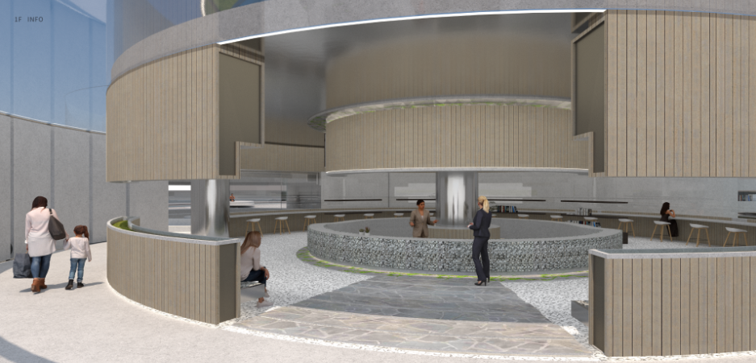
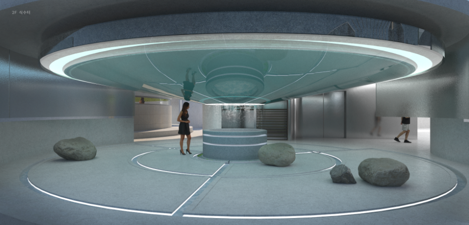
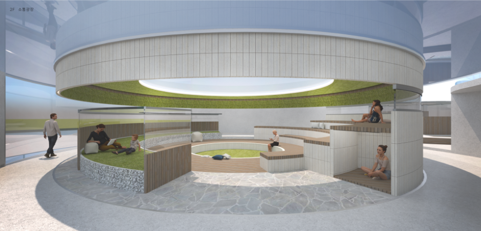
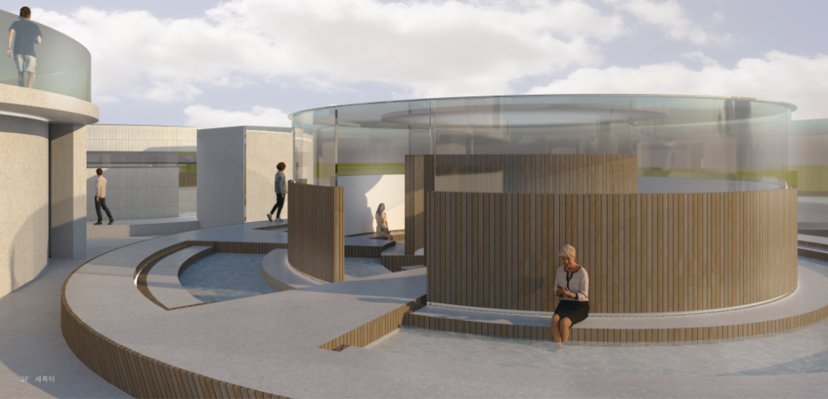
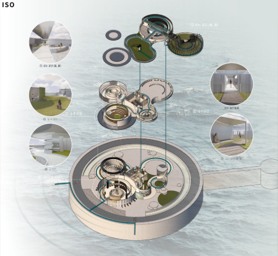
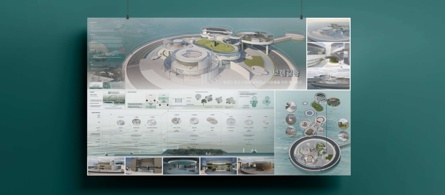
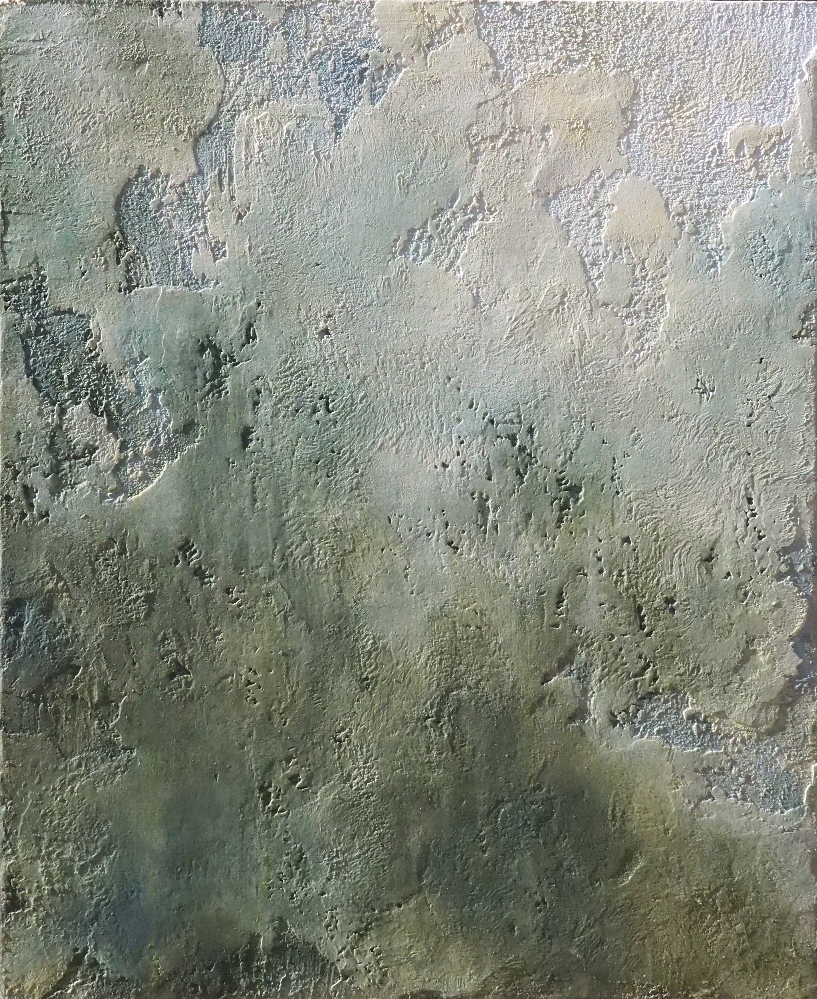
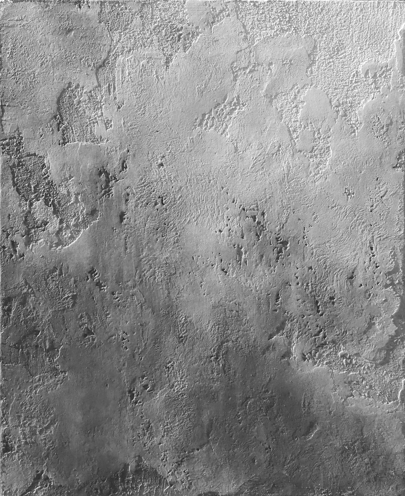

A multidisciplinary portfolio exploring space, material, image, and the quiet structures behind everyday experience.








01 / 02
04 / IMAGE
Observations of architecture, objects, and temporary arrangements. Selected photographs will be added here.
05 / CONNECT